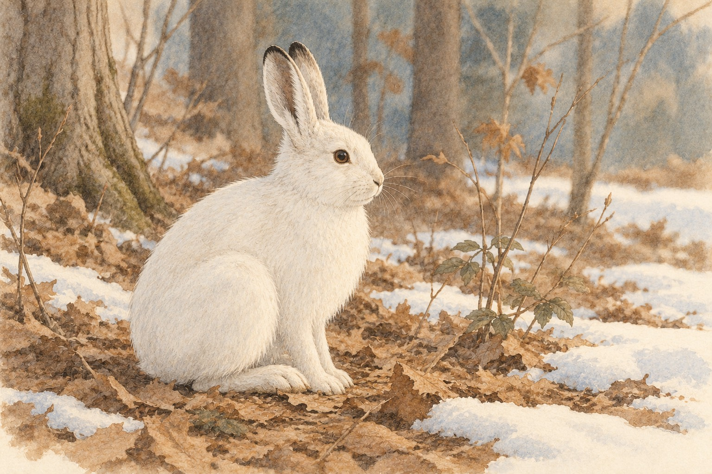

A wood frog and a woolly bear can both freeze and live.
How can a wood frog freeze and live?
Find the small frog tucked under the fallen leaves, and the fuzzy banded caterpillar resting on a leaf nearby.
A little explanation & something to try
When a wood frog starts to freeze, its liver pours out a sugar called glucose. Ice forms in its body, but outside its cells, and the glucose helps protect the cells. When the frog thaws, its heart is the first part to start again.
Try this. Draw a big circle for one frog cell. Draw ice crystals only outside the circle. Draw sugar dots near the cell. Tell how the sugar helps keep the cell safe while ice forms around it.
A chipmunk saves energy by letting its body cool down.
How does a chipmunk save energy all winter?
Find the chipmunk curled up tight in a nest of leaves under the snowy ground.
A little explanation & something to try
A chipmunk is a small hibernator. Its body gets much colder on purpose. This is called torpor, and it saves energy. For most small hibernators like this one, hibernation is many long torpor stretches in a row, with short warm-ups between them. To help warm back up, many mammal hibernators burn a special fat called brown fat.
Try this. Sit very still and count your breaths for 30 seconds. Then march in place for 30 seconds and count again. Tell which time used more energy. In torpor, an animal slows its body way down to save energy.
Honeybees huddle in a ball and shiver to make heat.
How do honeybees stay warm without hibernating?
Look at the round ball of bees on the comb. Find the bees on the outside and the bees packed in the middle.
A little explanation & something to try
Honeybees do not hibernate. They pack into a ball called a winter cluster. The outside bees make a blanket. The inside bees shiver their flight muscles without moving their wings, which makes heat. When there are no baby bees in the hive, the middle of the cluster is kept above about 64 degrees Fahrenheit.
Try this. Fill two jars with warm tap water and close the lids. Wrap one jar in a thick towel or some socks, like the outside bees. Leave the other jar bare. Wait 20 minutes, then touch both jars and tell which one stayed warmer.
The space under a thick snow blanket stays near freezing, not far below it.
Why can a mouse stay warmer under the snow?
Find the tunnel along the ground under the snow, the mouse inside it, and the small hole that reaches up to the air.
A little explanation & something to try
The space between the ground and the snow is called the subnivean zone. About six inches of snow works like a blanket, so this space stays near 32 degrees Fahrenheit even when the air above is much colder. Voles and mice tunnel and eat there, and small air holes let carbon dioxide out.
Try this. Put two kitchen thermometers in the freezer. Bury one in a thick pile of cotton balls, like a snow blanket. Leave the other one bare. After 20 minutes, read both and tell which one is warmer.
Winter groups and arrays
Use repeated addition to count equal groups and rows. These numbers are for a math story.
Honeybees huddle in a ball and shiver to make heat.
Choose one problem and draw it as rows of dots. Count the dots to check.
1. A chickadee hides 4 seeds in each of 3 trees. How many seeds does it hide altogether?
4 + 4 + 4 =
A small hint
Add the equal groups: 4 + 4 + 4.
2. Little lines up pinecones in 2 rows with 5 pinecones in each row. How many pinecones are there altogether?
5 + 5 =
A small hint
Add the equal groups: 5 + 5.
3. Big draws 4 sleeping chipmunks with 4 leaves on each one. How many leaves is that altogether?
4 + 4 + 4 + 4 =
A small hint
Add the equal groups: 4 + 4 + 4 + 4.
4. Big draws bees on a cluster in 5 rows with 5 bees in each row. How many bees are drawn altogether?
5 + 5 + 5 + 5 + 5 =
A small hint
Add the equal groups: 5 + 5 + 5 + 5 + 5.
5. There are 4 vole tunnels under the snow, and each tunnel has 2 air holes. How many air holes are there altogether?
2 + 2 + 2 + 2 =
A small hint
Add the equal groups: 2 + 2 + 2 + 2.
6. Little finds hare tracks in 3 rows with 5 tracks in each row. How many tracks are there altogether?
5 + 5 + 5 =
A small hint
Add the equal groups: 5 + 5 + 5.
Six winter plans
How Animals Get Ready for Winter
A cold woods
Big and Little walked to the edge of the woods. The days were getting short. A chickadee tucked a seed into a crack in the bark, then flew to another tree. Big said chickadees hide food in many spots in fall. They use a part of the brain called the hippocampus to find those spots again later.
Why might a chickadee hide its seeds in many different places?
Freeze and wait
Under the leaves, a wood frog freezes. Ice forms in its body, but outside its cells. Its liver pours out glucose, a kind of sugar, that helps protect the cells. A woolly bear caterpillar makes glycerol, an antifreeze-like protectant. In a lab test, caterpillars cooled slowly for weeks moved again after a week frozen at about -4 degrees Fahrenheit.
What does the sugar do for a wood frog as it freezes?
Cool and slow
In winter, a chipmunk's body gets much colder on purpose. This is called torpor, and it saves energy. For most small hibernators, hibernation is many long torpor stretches with short warm-ups between them. Many mammal hibernators burn brown fat, a special fat that makes heat, to warm back up. A bear is different. It cools only a few degrees.
How does getting colder help a chipmunk save energy?
Shiver and huddle
Honeybees do not hibernate. In winter they pack together into one ball called a cluster. The bees on the outside make a living blanket. The bees in the middle shiver their flight muscles without moving their wings. That shivering makes heat. When there are no baby bees, the middle stays warmer than about 64 degrees Fahrenheit.
Why do the outside bees and the inside bees have different jobs?
Under the snow
Little found a tiny hole in the snow. Big said it was an air hole. Under the snow, voles and mice dig tunnels along the ground. This space is called the subnivean zone. About six inches of snow works like a blanket, so it stays near 32 degrees Fahrenheit there, even when the air above is much colder. The air holes let carbon dioxide out.
Why is it warmer under the snow than in the air above it?

A white coat
In snowy places, most snowshoe hares grow a white coat in fall. In one study, the change started on about the same dates every year, snow or no snow. Scientists think the length of the day is the main trigger. The change takes about 40 days. So when snow comes late, a white hare can end up sitting on brown leaves.
Why might a white hare be easy to spot when snow comes late?